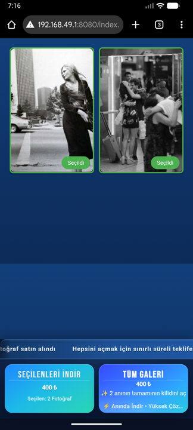

QR galeri, FTP aktarım, yerel teslim
Çekimden teslimata tek cihazda akış.
Çek - Göster - Sat
Fotoğrafları yerel galeriden ya da FTP destekli profesyonel fotoğraf makinesinden doğrudan uygulamaya alın, WiFi veya hotspot QR bağlantısını açın, her çekim için ayrı session yönetin, müşteriyi QR galeriye alın ve onaylanan dosyaları aynı cihazdan ZIP olarak teslim edin.
Aylık ve yıllık fiyatlarla doğrudan App Store bağlantısını site-config.js dosyasından güncelleyebilirsin. Apple mağaza ID'si eklenene kadar iOS logosu bölgesel App Store arama sonucunu açar.


Çek - Göster - Sat
Dil Desteği
Çok dilli müşteri deneyimi ile daha anlaşılır akış
SnapVend, farklı ülkelerden gelen müşteriler için web sitesi, müşteri galerisi ve desteklenen akışlarda daha anlaşılır bir dil deneyimi sunar.
12+
Desteklenen Diller
Web sitesi ve ilk yönlendirme
Ziyaretçi desteklenen dillerden biriyle geldiğinde içeriği daha rahat takip edebilir ve doğru sayfaya daha hızlı ulaşır.
Galeri ve müşteri seçimi
Müşteri tarafındaki galeri deneyimi ve seçim süreci, dil bariyerini azaltacak şekilde daha anlaşılır ilerler.
Onay ve teslim akışı
Ödeme, onay ve teslim adımları desteklenen dillerde daha net anlatılarak sahadaki iletişimi kolaylaştırır.
Canlı Demo
WiFi / hotspot bağlantısından session galerisine kadar akışı göster.
SnapVend müşteriyi önce WiFi veya hotspot QR bağlantısıyla aynı ağa alır, sonra session galerisine yönlendirir ve teslime kadar akışı tek deneyimde toplar.
Örnek ürün akışı
SnapVend
SnapVend
Örnek ürün akışı
Video linki eklersen bu alan otomatik olarak canlı ürün demosuna dönüşür.
Fotoğrafları içe al
Yerel galeriden seç ya da FTP destekli profesyonel fotoğraf makinesinden doğrudan uygulamaya aktar.
WiFi / hotspot QR bağlantısını aç
Müşteriyi uygulama indirtmeden aynı ağ ya da hotspot üstünde saniyeler içinde bağla.
Session QR ile galeriye al
Müşteri kendi session QR kodunu okutup yalnızca kendisine ait galeriye girsin.
Ödeme, PAC ve teslim
Seçimleri doğrula, ödeme ve PAC kontrolünü yap, sonra onaylanan dosyaları ZIP olarak teslim et.
Akış
QR, session ve teslim tek akışta
SnapVend profesyonel fotoğraf makinesinden doğrudan FTP aktarımını, WiFi veya hotspot üzerinden QR bağlantısını, session bazlı müşteri akışını ve teslim sonrası raporlamayı tek operasyon haline getirir.
-
01
Fotoğrafları profesyonel kameradan al
Yerel galeriden seçin ya da FTP destekli profesyonel fotoğraf makinesinden kareleri doğrudan SnapVend akışına aktarın.
-
02
WiFi / hotspot QR bağlantısını başlat
Aynı ortamda müşteriyi uygulama kurdurmadan ağa alın; bağlantı QR ekranı ağ adı, şifre ve erişim bilgisini net şekilde paylaşsın.
-
03
Session galerisini QR ile aç
Her müşteri veya etkinlik için ayrı açılan session galerisi, tarayıcıdan QR ile saniyeler içinde açılsın ve seçimler karışmadan ilerlesin.
-
04
Yerel ödeme ve PAC onayı
İşletme ülkenize göre hazır ödeme yöntemlerini gösterin, seçimi kontrol edin ve PAC doğrulamasını tamamlayın.
-
05
ZIP teslim ve satış raporu
Onaylanan dosyaları ZIP olarak teslim edin; indirme, satış, dönüşüm ve gelir akışını uygulama içindeki rapor ekranında session mantığını bozmadan izleyin.




Kimler İçin
Profesyonel saha ekipleri için tasarlandı
Müşteriye hızlı önizleme ve kontrollü teslim sunmak isteyen fotoğraf ekipleri için doğru merkez.
Düğün ve etkinlik fotoğrafçıları
Canlı çekimde hızlı seçim, anında teslim ve baskı listesini aynı akışta yönetmek isteyen düğün ekipleri için güçlü bir yapı sunar.
Stüdyo ve portre çekimleri
Müşteriyle birlikte seçim yapıp daha düzenli ilerlemek isteyen stüdyolar.
Okul, spor ve kurumsal işler
Oturumları karıştırmadan toplu çekimleri yönetmek isteyen ekipler.
Sokak, turistik alan ve mobil portre çekimleri
Sahada hızlı çekim yapıp, seçilen kareleri anında göstererek tekli veya paket teslim satışı yapmak isteyen fotoğrafçılar için güçlü bir akış sunar.
Mobil teslim ekipleri
İnternete bağlı kalmadan yerel ağ ve hotspot ile çalışan operasyonlar.
Kullanım Senaryoları
SnapVend'in öne çıktığı saha akışları
Doğrulanmış müşteri logosu ve yorumları eklendiğinde bu alan kolayca genişletilebilir. Şimdilik ürünün en iyi oturduğu kullanım senaryolarını ve ekip profillerini burada özetliyoruz.
Kullanım Senaryoları
Düğün ve davet seçimi
Çekim devam ederken ya da hemen sonrasında misafire QR ile galeri açın, seçimleri toplayın ve aynı cihazdan teslim edin.
Düğün baskı listesi
Çift, aile ve misafir seçimlerini toplarken baskıya gidecek kareleri ayrı bir baskı listesinde toplayın; sahadaki baskı akışı dijital teslimden kopmadan ilerlesin.
Stüdyo seçim masası
Portre veya aile çekimlerinde müşteriyle yan yana durup kareleri birlikte eleyin, onaylayın ve tek ekrandan ilerleyin.
Okul ve spor oturumları
Birden fazla seansı karıştırmadan sınıf, takım veya kulüp bazlı seçim ve teslim akışlarını ayrı tutun.
Sokak ve turistik alan portre satışı
Sahada hızlı çekim yapın, seçilen kareleri anında gösterin ve tekli ya da paket satış akışını aynı cihaz üzerinden yönetin.
Kurumsal etkinlik standı
Etkinlik alanında anlık çekim, QR girişi ve ZIP teslimi ile markalı bir deneyim sunun.
Referans Profilleri
Düğün baskı ve teslim ekipleri
Hem dijital teslimi hem de baskı hazırlığını aynı operasyon içinde yönetmek isteyen düğün fotoğrafçıları için tasarlanmıştır.
Hızlı teslim ekipleri
Sahada çekim alıp aynı gün seçim ve teslim sürecini kapatmak isteyen ekipler için uygundur.
Markalı deneyim arayan stüdyolar
Özel logo, işletme adı ve kontrollü müşteri akışı isteyen profesyonel stüdyolar için güçlü bir yapı sunar.
Yerel ağ ile çalışan operasyonlar
İnternet bağlantısına güvenmeden hotspot veya yerel ağ üzerinden işleyen ekipler için doğrudan uyumludur.
Çoklu oturum yöneten ekipler
Farklı müşteri veya organizasyonları ayrı akışlarda tutmak isteyen yoğun saha operasyonları için tasarlanmıştır.
Planlar
Ücretsiz başlayın, Pro ile büyütün
Ücretsiz plan akışı öğrenmek için hazırdır. Pro planlar teslim limitini kaldırır ve işletme markalamasını açar.
Bu repoda kesin aylık/yıllık fiyat yok. Fiyatlar ve doğrudan App Store linki site-config.js dosyasından güncellenir.
Akışı öğrenmek için ideal
0
başlangıç
- Günlük 10 fotoğraf teslim limiti
- SnapVend markası görünür kalır
- Özel işletme adı ve logo kapalıdır
- Canlı kullanım öncesi sistemi denemek için uygundur
Esnek aylık kullanım
Fiyatı güncelle
/ ay
- Sınırsız günlük teslim
- Özel işletme adı ve logo
- Özel ZIP dosya adı
- Sınırsız düğün baskı listesi
Pro Yıllık
En Popüler
Düzenli kullanım için avantajlı
Fiyatı güncelle
/ yıl
- Daha düşük yıllık maliyet hedefi
- Sınırsız günlük teslim
- Tam marka kontrolü
- Yoğun saha kullanımı için kalıcı çözüm
SSS
Karar vermeden önce en çok sorulanlar
Müşterilerin ve saha ekiplerinin en sık sorduğu temel soruları burada topladık.
SnapVend internetsiz çalışır mı?
Evet. Ana akış yerel ağ veya hotspot üzerinde çalışabilir. Bulut zorunlu değildir.
Profesyonel fotoğraf makinesinden doğrudan aktarım yapabilir miyim?
Evet. FTP destekli profesyonel fotoğraf makinelerinden fotoğrafları aynı ağ veya hotspot üzerinden doğrudan SnapVend uygulamasına aktarabilirsiniz.
Müşteri fotoğrafları nasıl görür?
Müşteri önce WiFi ya da hotspot QR bağlantısıyla aynı ağa alınır, ardından session QR kodunu okutup yalnızca kendisine ait galeriyi tarayıcıdan açar.
Session yapısı ne işe yarar?
Her müşteri, çekim veya etkinlik ayrı bir session olarak tutulur. Böylece fotoğraflar, seçimler, ödeme akışı ve teslim kayıtları karışmaz; ayrıca her session'ın sonucu daha kontrollü izlenir.
Raporlar bölümünde neyi takip edebilirim?
Rapor ekranı üzerinden satış adedi, gelir, indirme hareketleri, dönüşüm ve ortalama sepet gibi temel performans göstergelerini sahadaki operasyonu kapatmadan izleyebilirsiniz.
Kendi işletme adımı ve logomu kullanabilir miyim?
Evet. Pro planlarda özel işletme adı, logo ve teslim markalaması açılır.
Müşteriye ülkeye göre ödeme yöntemi gösterebilir miyim?
Evet. İşletme ülkesi seçildiğinde kurulumu tamamlanan yerel yöntemler ödeme popup ekranında görünür. Türkiye, İspanya, Hindistan, Çin ve Japonya için hazır yöntem setleri vardır.
Baskı listesi ne işe yarar?
Baskı listesi, seçilen kareleri teslim akışından koparmadan baskı için ayrı tutar. Özellikle düğün fotoğrafçılarında hangi fotoğrafın basılacağı ve baskı hazırlığının nasıl ilerlediği daha kontrollü yönetilir.
Hangi dilleri destekliyor?
Web sitesi, müşteri galerisi ve desteklenen akışlarda şu diller sunulabilir: Türkçe, English, Español, Français, Deutsch, Italiano, Português, Русский, العربية, हिन्दी, 日本語, 中文 (简体)
Teslim limiti hangi planda kalkıyor?
Aylık ve yıllık Pro planlar günlük teslim limitini kaldırır.
İletişim
İstek, talep ve iş birliği mesajlarını doğrudan bize gönderin
Formu gönderdiğinizde varsayılan e-posta uygulamanız açılır ve mesaj snapvendinfo@gmail.com adresine hazır şekilde gider.
Bize Yazın
Demo talebi, fiyat sorusu, iş ortaklığı veya özel akış ihtiyacınız için formu kullanın.
Hazır mısın?
SnapVend ile sahada daha hızlı göster, seçtir ve teslim et.
QR erişimi, FTP aktarımı, yerel paylaşım ve raporlama tek deneyimde buluşur.